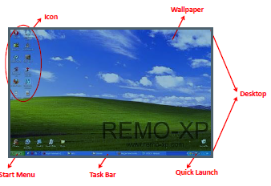

Pengertian Seputar Desktop, wallpaper,Icon,Start Menu Pada Komputer :

Wallpaper
Wallpaper adalah gambar yang menempel diatas desktop. Windows menyediakan berbagai macam wallpaper bawaan sehingga kita dapat mengubahnya dengan mudah dan cepat.
Start Menu
adalah tombol Start yang berisi berbagai macam program yang telah kita install, menu-menu lain yang dapat diakses oleh pengguna (user), seperti misalnya mendengarkan musik, menjalankan program editor teks dan lain-lain.
Icon
Icon Program adalah gambar-gambar kecil yang menempel diatas desktop yang diikuti dengan identitasnya. Tujuan dari icon ini adalah untuk memudahkan dalam mengaktifkan suatu program aplikasi. Icon ini dapat kita tambah dan kurangi sesuai dengan kebutuhan kita. Kalau terlalu banyak icon pada desktop akan mengurangi keindahan dari desktop itu sendiri.
Task Bar
Taskbar adalah batang panjang yang terdapat paling bawah desktop. Kita dapat memindahkan taskbar ke bagian atas, samping kanan dan kiri desktop sesuai dengan keinginan kita. Pada taskbar ini terdapat program yang kita minimize-kan, icon-icon lainnya seperti icon pengaturan volume dan jam yang aktif.
Quick Launch
Sumber : https://rungam-2012250039.blogspot.com/2015/10/pengertian-seputar-desktop.html